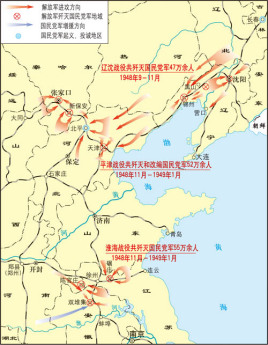

三大战役

三大战役是指1948年9月12日至1949年1月31日，中国人民解放军同国民党军队进行的战略决战，包括辽沈战役、淮海战役、平津战役三场战略性战役。 1948年，解放军攻克拥有10万重兵、工事坚固的山东省会城市济南。毙伤国民党军22423人，俘王耀武以下61873人。石家庄战役是人民解放军攻克敌人重点设防的大城市的开始，而济南战役揭开了战略决战的序幕。辽沈、淮海、平津三大战役，历时142天，共争取起义、投诚、接受和平改编与歼灭国民党正规军144个师，非正规军29个师，合计共154万余人。国民党赖以维持其反动统治的主要军事力量基本上被消灭。三大战役的胜利，奠定了人民解放战争在全国胜利的基础。